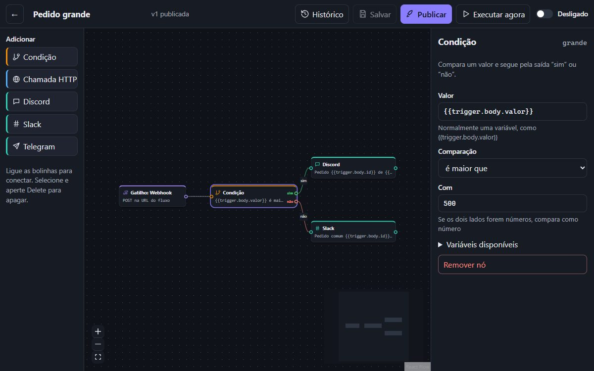

Motor de Automações
Fluxos visuais (webhook ou agendamento → condição → chamada de API → IA → Discord, Slack ou Telegram) que rodam de verdade: fila no PostgreSQL, nova tentativa só do passo que falhou e histórico de cada execução com o fluxo colorido pelo resultado.
- Fila com SKIP LOCKED, lease e recuperação de worker que cai
- Row Level Security, proteção contra SSRF e 82 testes no CI
- Nó de IA com Claude ou Gemini: classificação por JSON Schema e defesa contra prompt injection